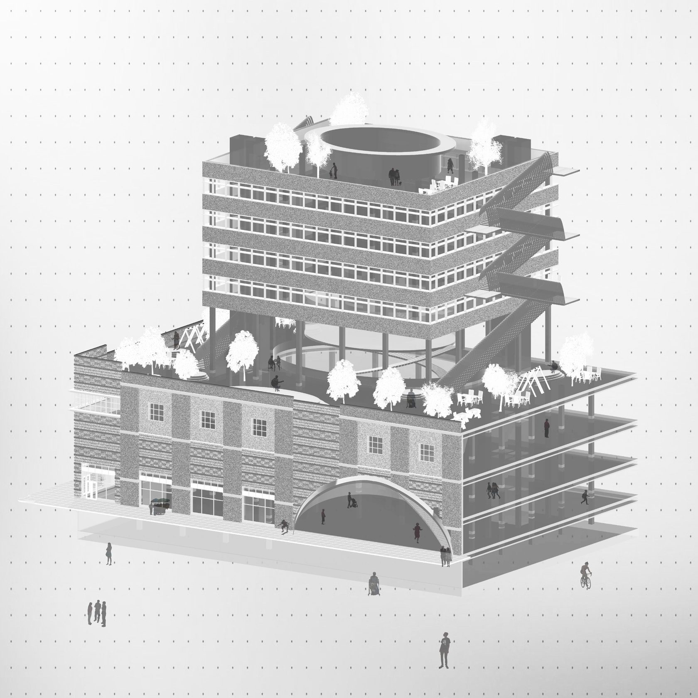
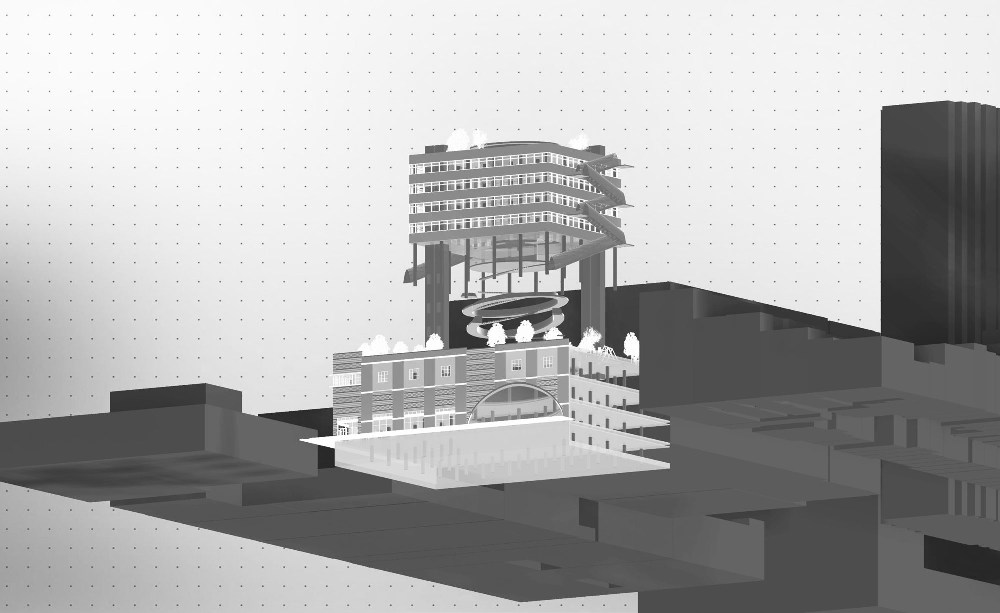
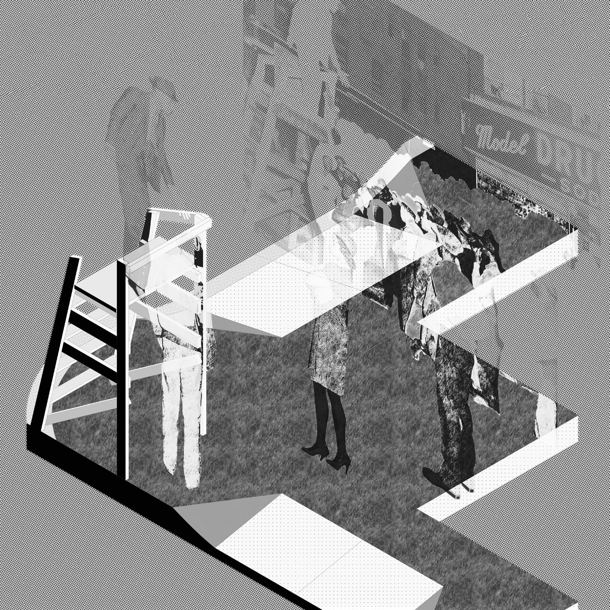
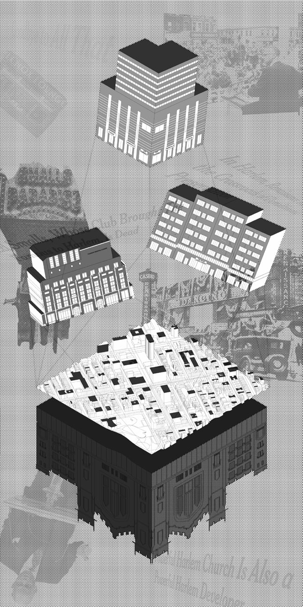

125 corner university
- semester
- Core I "Fugitive Mobilities", Fall 2023
- site
- Harlem, NYC
- instructor
- Galen Pardee
A big-box retail building returned to its original civic mission.
Originally built in 2001 by the Abyssinian Development Corporation as a big box retail and office complex, 125 Corner University reimagines the building as a vertical neighborhood institution that serves every member of the Harlem community within a single structure.
The Abyssinian Development Corporation built this building to rebuild the social and physical capital of Harlem. What opened was a Marshalls, a CVS and a Dunkin Donuts. 125 Corner University returns the building to that original mission, stacking the services the community actually needs above the retail that pays for them.



